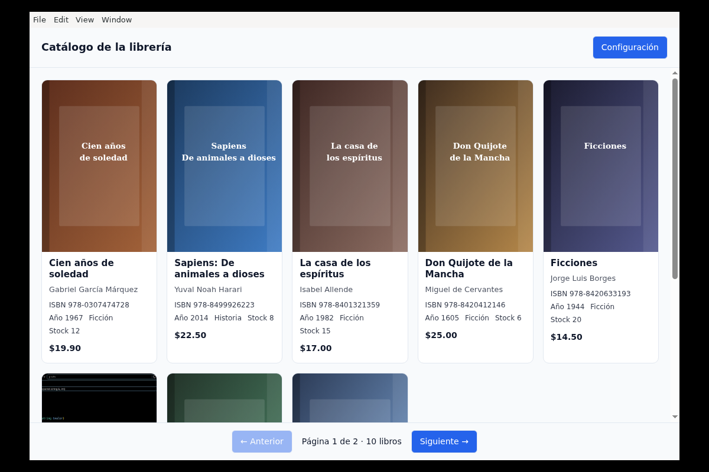
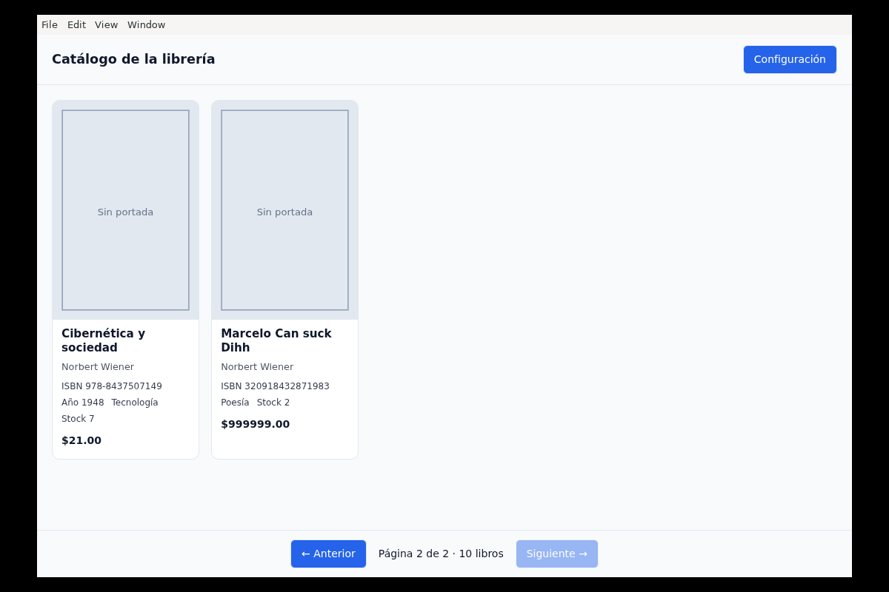

Reporte de actividad · 04
Un cliente de escritorio
para el tercer microservicio.
Una aplicación Electron con cards, paginación y configuración persistente que consume — exclusivamente por XML — un microservicio REST nuevo, libros-ms, construido sobre la misma base PostgreSQL que ya usan el monolito del Ejercicio 02 y el módulo SOAP del Ejercicio 03.
- 01 · Objetivo y una desviación honesta
- 02 · Arquitectura
- 03 · Cómo se relaciona con ej02 y ej03
- 04 · El microservicio libros-ms
- 05 · La aplicación Electron
- 06 · Decisiones de ingeniería
- 07 · Problemas reales y cómo se resolvieron
- 08 · Pruebas y verificación
- 09 · Empaquetado y descargas
- 10 · Conclusiones
- 11 · Uso de IA y prompts
Objetivo y una desviación honesta
El enunciado (reproducido íntegro aquí) pide tres cosas: una aplicación de escritorio Electron con una GUI profesional que muestre el catálogo en cards — portada, autores, ISBN, stock, año, género y precio — con paginación y carga por petición; que consuma exclusivamente XML desde un microservicio, con URL y endpoint configurables y persistidos en localStorage; y un README.md con los pasos para ejecutarla en Windows 11.
http://34.51.99.221:5001/books. En vez de depender de ese servidor genérico, se construyó un tercer microservicio propio, libros-ms, siguiendo exactamente el mismo patrón de infraestructura que ya se estableció en los Ejercicios 02 y 03: mismo Postgres compartido, mismo Raspberry Pi, mismo túnel de Cloudflare, mismo estilo de rol de mínimo privilegio. La app Electron apunta por defecto a libros.maxthecoder.online — pero el requisito literal («la URL y el endpoint deben ser configurables») se cumple al pie de la letra, así que también funciona contra el servidor del curso o cualquier otro que hable el mismo contrato XML, sin tocar una línea de código.
Dentro del alcance: el microservicio libros-ms (Flask, solo lectura); la aplicación Electron completa con IPC, módulos puros probados y empaquetado real; la migración aditiva necesaria para soportar el filtro format del contrato.
Fuera del alcance: escritura sobre el catálogo (ni desde el microservicio ni desde la app); tocar el código o el esquema funcional de los Ejercicios 02 o 03.
Arquitectura
El flujo completo: la app Electron corre en la laptop del usuario (Windows o Linux); su proceso main hace la petición HTTP al microservicio a través del túnel de Cloudflare — nunca el renderer, para no depender de CORS. libros-ms consulta la misma base PostgreSQL que ya comparten el monolito y el módulo SOAP, y re-sirve las portadas y el cliente empaquetado.
libros-ms es un contenedor más sobre la misma base que ya usan el monolito y el módulo SOAP, cada uno con su propio rol de PostgreSQL.Cómo se relaciona con ej02 y ej03
Los tres ejercicios forman ya un pequeño ecosistema alrededor de un solo catálogo: un dueño (el monolito) y dos consumidores de solo lectura con protocolos distintos.
| Aspecto | Ej. 02 (monolito) | Ej. 03 (SOAP) | Ej. 04 (libros-ms + Electron) |
|---|---|---|---|
| Protocolo del servicio | HTML sobre HTTP | SOAP 1.1 sobre HTTPS | REST/XML sobre HTTPS |
| Cliente | Navegador | Java Swing · zeep | Electron (Windows / Linux) |
| Usuario de BD | libreria — dueño | soap_svc — mínimo privilegio | libros_ms_svc — mínimo privilegio |
| Puerto local | 3000 | 8003 | 5001 |
| Cambios al esquema | — | ninguno | +1 columna aditiva (formato) |
| Despliegue | ~/libreria/ | deploy-iac/ejercicio-03/ | deploy-iac/ejercicio-04/ |
La diferencia real de este ejercicio no es el protocolo — ya se había hecho HTML y SOAP — sino que es el primer cliente de escritorio nativo del portafolio: no corre en un navegador ni depende de un JRE, sino que se empaqueta como binario independiente para dos sistemas operativos.
El microservicio libros-ms
Flask + gunicorn (2 workers × 4 hilos), el mismo patrón de conexión a PostgreSQL que ya usa ej03 (psycopg2.pool.SimpleConnectionPool, transacciones con commit/rollback automático, /healthz que hace ping real a la base). Es de solo lectura: ni una ruta escribe en el catálogo.
| Ruta | Qué hace |
|---|---|
GET /books | Catálogo con filtros format, isbn, title, year, min_price, max_price, paginación page/per_page |
GET /books/<isbn> | Un solo libro con el mismo contrato |
GET /uploads/<archivo> | Portadas reales del catálogo (montadas de solo lectura desde el monolito) |
GET /download-client | Página con los dos instaladores (Windows / Linux) |
GET /healthz, /openapi.json | Salud y contrato de la API |
Cada <book> del XML trae isbn, title, genero (de categorias.nombre), formato, editorial, year (de fecha_publicacion), portada (URL absoluta re-servida por el propio microservicio), price, stock, la lista de <authors> y la lista de <concepts> (término + definición). Se serializa con xml.etree.ElementTree, nunca con f-strings, para que el escape de &, < y > en títulos o definiciones lo haga la librería estándar.
formato. El contrato pide un filtro por formato que no existía en el esquema del Ejercicio 02. Se agregó con ALTER TABLE libros ADD COLUMN formato text NOT NULL DEFAULT 'Fisico', aplicada en caliente contra libreria-db-1. Antes de aplicarla se verificó — leyendo el código real de ej02 y ej03, no asumiendo — que ninguno de los dos usa INSERT/UPDATE posicional sobre libros, que el único SELECT * del monolito alimenta una plantilla EJS que lee campos por nombre, y que no existe ningún validador de esquema que rechace un campo extra. La migración no tocó una línea de código de ninguno de los dos ejercicios anteriores.
La aplicación Electron
Cards con portada (con fallback a un SVG local si la imagen no carga), autores, ISBN, stock, año, género y precio; paginación de 8 en 8 con una petición HTTP nueva por página, nunca todo el catálogo de una vez. La URL del servidor y el endpoint son configurables desde un panel en la propia interfaz y se persisten en localStorage, con https://libros.maxthecoder.online como valor por defecto.
La arquitectura interna separa tres capas: módulos puros (src/shared/parseXml.js, paginate.js, cover.js) sin ninguna dependencia de Electron, probados con node --test corriendo plano; el proceso main, que hace el fetch() real vía un handler de IPC (libros:fetch-page) para que el renderer nunca abra una conexión de red directamente; y el preload, que expone esos módulos puros y el fetch al renderer con contextBridge, explícito y de solo lectura.

libros.maxthecoder.online: portadas, metadatos y precio en cada card, cargados por el proceso main vía IPC.
Decisiones de ingeniería
Servidor propio en vez del servidor de ejemplo del curso
- Necesidad
- El enunciado apunta a un microservicio genérico (
34.51.99.221:5001) que no es propio ni forma parte del portafolio. - Decisión
- Construir
libros-mscon el mismo patrón de infraestructura de ej02/ej03 y dejarlo como valor por defecto configurable. - Justificación
- El requisito real y verificable no es «usa ese servidor», sino «la URL y el endpoint deben ser configurables» — y eso se cumple exactamente igual apuntando a cualquier servidor que hable XML con el mismo contrato.
- Ventajas
- Un tercer microservicio más en el portafolio, con su propio rol de mínimo privilegio y su propio despliegue documentado; la app sigue funcionando contra el servidor del curso sin cambiar código.
- Limitaciones
- El contrato XML de
libros-mses una interpretación propia del enunciado, no una copia del servidor de ejemplo — no se pudo comparar campo a campo porque el servidor de ejemplo no fue alcanzable desde este entorno.
El fetch corre en el proceso main, no en el renderer
- Necesidad
- Consumir un servidor HTTPS externo sin pelear con CORS ni exponer la red al contenido de la página.
- Decisión
- Un único handler de IPC (
ipcMain.handle('libros:fetch-page', ...)) hace elfetch(); el renderer solo pide y recibe texto XML ya descargado. - Justificación
- El proceso main de Electron no tiene política de mismo origen; el renderer, si hiciera el fetch él mismo, quedaría sujeto a CORS del lado del servidor — algo que no se controla desde el cliente.
- Ventajas
- Funciona contra cualquier servidor sin configurar cabeceras CORS en
libros-ms. Un timeout conAbortControllerprotege contra un servidor colgado. - Limitaciones
- El preload no puede correr con
sandbox: true(ver sección 07) porque necesitarequire()los módulos puros locales — un trade-off documentado, no un descuido.
Parser XML propio en vez de una librería
- Necesidad
- Los módulos puros deben probarse con
node --testsin instalar nada ni depender de un DOMParser de navegador. - Decisión
- Un parser minimalista en
src/shared/parseXml.js, con una sola expresión regular para tags y otra para atributos. - Justificación
- El contrato que produce
libros-mses simple y conocido (sin namespaces, sin CDATA, generado conxml.etree.ElementTree): no justifica traer una dependencia completa de parsing XML para un caso de uso tan acotado. - Ventajas
- Cero dependencias de producción para la lógica más crítica de la app; 17 pruebas corren en menos de 300 ms.
- Limitaciones
- No es un parser XML general — no soporta namespaces ni CDATA. Un bug real de esta limitación se encontró y se corrigió (sección 07).
Problemas reales y cómo se resolvieron
Todos estos bugs aparecieron corriendo la aplicación de verdad — con Electron real bajo Xvfb en el propio Raspberry Pi, no solo leyendo el código — que es exactamente el patrón que ya había dado resultado en el Ejercicio 03.
| Problema | Cómo se detectó | Causa | Solución |
|---|---|---|---|
UndefinedTable en /books |
curl directo al servicio recién desplegado |
El JOIN usaba el alias c pero el SELECT referenciaba cat |
Alias consistente en las dos consultas de repositorio.py |
| Panel de configuración visible siempre | Captura de pantalla de la app real | Una regla de autor con display: flex gana sobre el display: none del user-agent para [hidden] |
Regla explícita .panel-config[hidden] { display: none; } |
module not found: ../shared/parseXml en el preload |
Log de consola del proceso main al cargar la ventana | El sandbox: true de Electron restringe el preload a un require() que solo resuelve módulos nativos de Node, no archivos del proyecto |
sandbox: false solo para el preload; el renderer sigue sin nodeIntegration porque la app solo carga su propio index.html, nunca contenido remoto |
XML mal formado: se esperaba cierre de "year", vino "book" |
El catálogo real se veía vacío en la GUI con un libro sin fecha de publicación | xml.etree.ElementTree serializa un elemento con texto vacío como self-closing (<year />); el grupo de atributos del parser propio, mal acotado, se comía la barra antes de que el grupo final la viera |
Regex de atributos reescrita para reconocer solo pares nombre="valor" — y una prueba de regresión con exactamente ese caso |
electron-packager exige Wine para el target Windows |
electron-packager --platform=win32 falla con Wrapper command 'wine64' not found |
El paquete infiere appVersion del campo version de package.json; cualquier valor (inferido o explícito) obliga a correr rcedit — un editor de recursos de Windows — vía Wine |
Se quitó version de package.json (la app es privada, no se publica), lo que evita la inferencia y el .exe se genera sin Wine ni una máquina Windows |
Pruebas y verificación
node --test sobre los módulos purossrc/shared/run.sh incluido| Verificación | Resultado | Estado |
|---|---|---|
curl .../healthz | {"status":"ok","db":"ok"} | Pasa |
curl .../books | XML válido, 10 libros, filtros y paginación correctos | Pasa |
curl -I .../download-client | 200, ambos botones enlazan a un .zip real | Pasa |
node --test test/ | 17 casos, incluida la regresión del tag self-closing | Pasa |
npm run check:env | Node, dependencias y archivos de entrada verificados | Pasa |
| App real (Electron + Xvfb) contra el servidor público | Cards con portadas reales, paginación por petición, error controlado si el servidor no responde | Pasa |
.exe de Windows | PE32+ executable, x86-64 — verificado con file | Pasa |
| Binario de Linux | ELF 64-bit LSB, x86-64 — no ejecuta en el Pi (ARM64) por diseño; se valida en la laptop del usuario | Pasa |
Descarga completa del .zip vía el túnel + unzip -t | Sin errores de integridad | Pasa |
Empaquetado y descargas
electron-packager no compila nada: baja el binario prebuilt de Electron para cada plataforma, así que ambos instaladores se generan en el propio Raspberry Pi (ARM64/Linux) sin Wine y sin una máquina Windows — ver la decisión de la sección 06 sobre por qué se quitó version de package.json para lograrlo.
- Código fuente completo (GitHub)Microservicio Flask, app Electron, SQL, scripts de despliegue y empaquetado
- /booksCatálogo en XML, en vivo
- /openapi.jsonContrato de la API
- /download-clientCliente de escritorio — Windows y Linux
Ninguna descarga incluye .env, contraseñas ni cadenas de conexión.
Conclusiones
El hallazgo más útil de este ejercicio no fue Electron en sí, sino cuánto de lo que Electron da «gratis» en realidad son fronteras de seguridad que hay que entender antes de desactivar: el sandbox del preload no es un capricho, y desactivarlo solo para el preload — nunca para el renderer, que sigue sin nodeIntegration — es un trade-off consciente, no un atajo.
El segundo hallazgo fue metodológico: los cinco bugs de la sección 07 aparecieron todos ejecutando la app de verdad, con una captura de pantalla real de Electron corriendo bajo Xvfb en el Pi — ninguno se habría visto solo leyendo el código. Es el mismo patrón que ya había funcionado en el Ejercicio 03, aplicado aquí a un stack completamente distinto (Electron/Node en vez de SOAP/Java).
Y sobre la desviación del servidor de ejemplo: adaptar el enunciado a la infraestructura propia — en vez de depender de un servidor que no se controla y que ni siquiera fue alcanzable durante el desarrollo — resultó, otra vez, en un artefacto más reutilizable: un tercer microservicio con su propio rol de base de datos, su propio despliegue documentado y su propio lugar en este portafolio.
Uso de IA y prompts
Todo el ejercicio se desarrolló con Claude Code (Anthropic) en una sesión de terminal con acceso al Raspberry Pi. El asistente escribió la mayor parte del código y corrió las verificaciones reales (curl, node --test, Electron bajo Xvfb, empaquetado); la responsabilidad de decidir el rumbo, revisar y aprobar cada paso permaneció en el estudiante.
| Prompt (resumido) | Qué produjo la IA | Qué se aceptó / modificó / rechazó |
|---|---|---|
Plan detallado de dos repos: deploy-iac-ejercicio-04 nuevo (microservicio + Electron) y una entrada nueva en repIac, siguiendo el patrón exacto de ej03. |
Exploró los repos de ej02/ej03 y repIac en paralelo, encontró el esquema real de la BD y detectó que faltaba la columna formato que pedía el contrato. |
Aceptado: la estructura completa. Pregunta abierta: qué hacer con la columna faltante — se resolvió en el siguiente prompt. |
| «Me gusta agregar la columna, pero ¿esto no va a romper mis apps anteriores?» | Auditó el código real de ej02 y ej03 (no asumió) buscando INSERT/UPDATE posicional, SELECT * con acceso por índice y validadores de esquema. |
Aceptado tras la verificación explícita: la migración aditiva es segura porque ambos ejercicios usan listas de columnas explícitas. |
| Confirmación manual del hostname en el dashboard de Cloudflare (captura de pantalla). | Verificó con curl que /healthz, /books y /download-client respondían públicamente antes de continuar. |
Aceptado. |
«Dame los tres pasos para publicar en Cloudflare» / imagen de la consigna real (4_Electron_app.md), que resultó distinta del plan original en un punto importante: apuntaba a un servidor de ejemplo del curso, no a uno propio. |
Intentó verificar la conectividad al servidor de ejemplo del curso antes de continuar. | Corregido por el estudiante: «recuerda que modificamos la implementación para que se ajuste a nuestro entorno de trabajo, no seguimos esas instrucciones al pie de la letra» — se documentó como decisión de ingeniería explícita (sección 06) en vez de intentar depurar una conexión que nunca fue el objetivo real. |
El patrón que más valor dio, otra vez: los errores se encontraron ejecutando la aplicación real, con Xvfb y capturas de pantalla, no leyendo el código ni confiando en que «debería funcionar». Los cinco problemas de la sección 07 se descubrieron y corrigieron así, uno detrás de otro, en la misma sesión.